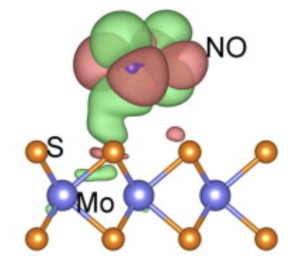
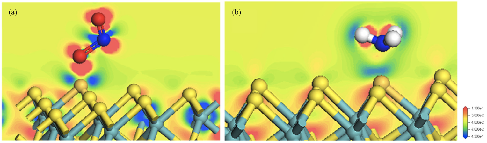
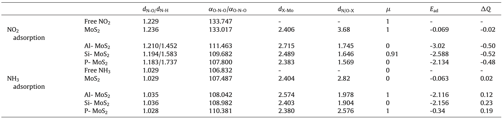
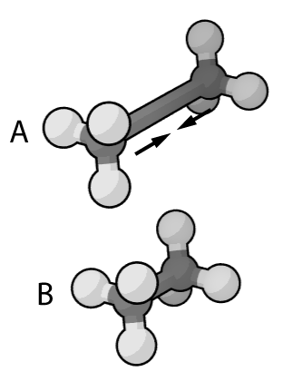
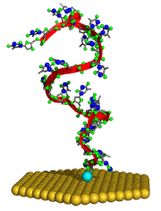

Przedmiot specjalistyczny FT sem.6
Jest to adhezja atomów, jonów i molekuł na powierzchni. Proces ten prowadzi do utworzenia się cienkiej warstwy adsorbatu na powierzchni adsorbentu. W przeciwieństwie do absorpcji (zachodzącej w całej objętości) zachodzi jedynie na powierzchni.


Gęstość elektronowa (a) NO2 na Si-MoS2, oraz (b) NH3 na Si-MoS2
Wyniki przedstawiające adsorpcję NO2 oraz NH3 na powierzchni domieszkowanego/niedomieszkowanego MoS2.

dN-O/N-H - długości wiązania N-O oraz N-H, αO-N-O/H-N-H kąt wiązania O-N-O oraz N-H-N. dX-Mo - długość wiązania X(Al, Si, P, S) z Mo. dN/O-X - długość wiązania pomiędzy atomem N i X w przypadku NH3 oraz O i X w przypadku NO2. Dla niedomieszkowanego MoS2 jest to długość wiązania N-S w przypadku NO2 oraz odległości atomu N od warstwy S w przypadku NH3. μ - moment magnetyczny. Ead - energia adsorpcji, ΔQ - transfer ładunku (wartość ujemna oznacza transfer z MoS2 do molekuł gazu)
Kiedy NO2 oraz NH3 adsorbowane są na powierzchni domieszkowanego MoS2, negatywna wartość transferu ładunku oznacza stabilną strukturę. NO2 staje się akceptorem i pozyskuje elektrony z domieszkowanego MoS2, natomiast NH3 staje się donorem, "oddając" elektrony warstwie domieszkowanego MoS2. Atomy domieszkowane zwiększają efekt hybrydyzacji orbitali pomiędzy NO2, NH3 a monowarstwą MoS2. Adsorpcja molekuł gazu zmienia moment magnetyczny domieszkowanego układu.
W chemii i modelowaniu molekularnym, pole siłowe to metoda pozwalająca na oszacowanie sił oddziaływania atomów wewnątrz jak i pomiędzy molekułami.
Funkcja oraz zestaw parametrów mają za zadanie opisanie energii potencjalnej układu, odgrywa niezbędną rolę w dynamice molekularnej, mechanice molekularnej czy symulacji Monte Carlo jako przybliżenie rzeczywistej funkcji potencjału.

Pole siłowe używane jest do zminimalizowania energii oscylacyjnej w molekule etanu.
Pola siłowe takie jak UFF lub DREIDING są powszechnie używane w symulowaniu adsorpcji i dyfuzji molekuł na związkach metaloorganicznych (MOF), ich dokładność jednak nie jest dobrze zbadana.
Dzięki obliczeniu energii oddziaływań dużej liczby konfiguracji adsorbatu za pomocą DFT, uzyskuje się pola siłowe pozwalające przewidzieć takie parametry jak izoterma adsorpcji, ciepło adsorpcji czy właściwości dyfuzyjne alkanów i alkenów.
Dzięki potraktowaniu gęstości elektronowej jako pole siłowe pomiędzy atomami, możemy znacznie przyspieszyć czas obliczeń przez zastosowanie dużo mniej wymagających modeli używając jedynie dynamiki Newtonowskiej do opisania oddziaływań międzyatomowych[3].

Powstają metody wykorzystania takiego sposobu obliczeń do badania interakcji powierzchni z molekułami biologicznymi (wiązania peptydów z powierzchnią ciała stałego), dotychczasowe metody nie pozwalały na dokładny opis biointerfejsów w tej skali[4].
Przez lata opracowano wiele różnych pól siłowych znajdujących zastosowanie w symulacji wielu różnych układów (CHARMM, AMBER), oraz takie zoptymalizowane do prowadzenia wyspecjalizowanych obliczeń (OPLS)
Przykładowe rodzaje pól siłowych:
Wszystkie potencjały międzyatomowe oparte są na przybliżeniach i danych eksperymentalnych. Przez to określa się je mianem "empirycznych". Przez tą niedokładność danych, jakość obliczeń może być zarówno lepsza od obliczeń DFT lub opierać się jedynie na losowym zgadywaniu opartym na polu siłowym. Dokładne reprezentacje wiązań chemicznych, połączone z danymi eksperymentalnymi mogą prowadzić do obliczeń potencjałow o większej dokładności z użyciem dużo mniejszej liczby zewnętrznych parametrów i założeń w porównaniu do kwantowych metod DFT - poziom takich obliczeń jest jednak silnie zależny od jakości danych źródłowych.
Use a spacebar or arrow keys to navigate.
Press 'P' to launch speaker console.